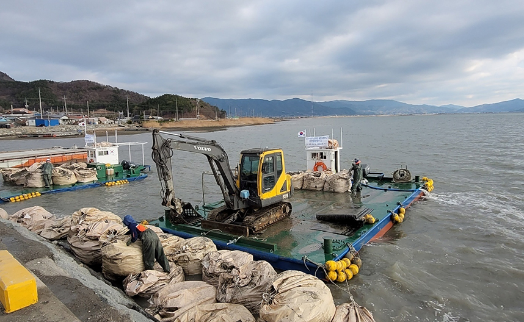
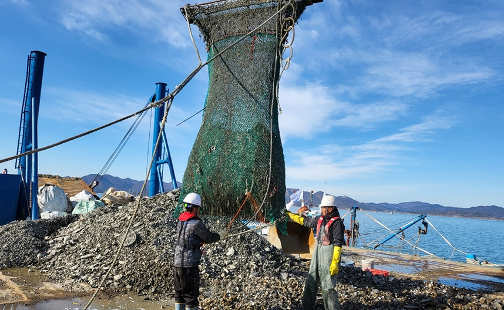
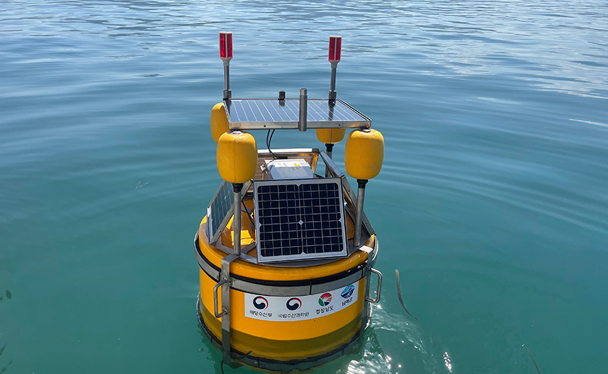

유류피해지역 환경개선
홈
사업소개
역동하는 어장
유류피해지역 환경개선
사업소개
추진계획 · 체계
성과 및 자료
주요성과
주요성과 표로 유류피해지역 환경개선사업(마을어장, 수산종자발생장, 어선어업수역) 정보 제공
유류피해지역 환경개선사업
마을어장
수산종자발생장
어선어업수역
투석, 유생착저시설, 모래살포, 폐지주제거, 어장바닥경운 등 유류피해 어장에 환경개선사업을 추진하여 어장환경 복원
2010~2020년 기준 수산종자발생장 2,286ha의 오염어장 환경 복원
유생착저시설, 모래살포, 패류 모래살포, 모낙지 살포, 조위망시설 등 유류피해 어장에 환경개선사업을 추진하여 어장환경 복원
2010~2019년 기준 수산종자발생장 의 2,286㏊ 오염어장 환경 복원
2010~2019년 12개 시군 폐어업기자재 7,958톤 수거·처리
관련자료

마을어장 환경개선사업

수산종자발생장 환경개선사업

어선어업수역 환경개선사업
이전 슬라이드
다음 슬라이드